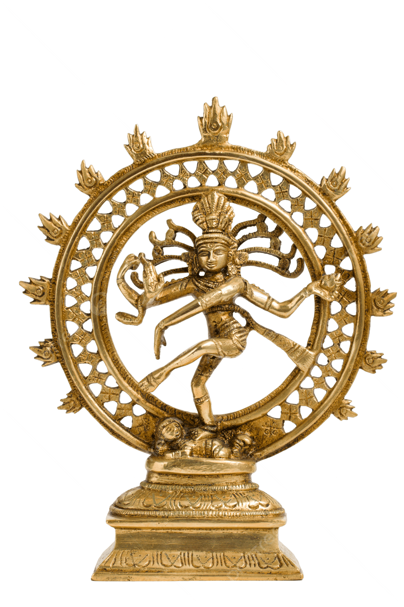

Kalyani Kala Nrityalaya is a premier institution dedicated exclusively to the divine art form of Kuchipudi. We believe that classical dance is not merely a physical discipline, but a profound spiritual journey that harmonizes the mind, body, and soul.
Our curriculum meticulously bridges the gap between ancient traditions and refined modern pedagogy. We ensure that every student not only masters the physical movements but deeply understands the rhythmic complexities, mythological narratives, and theoretical foundations outlined in the Natya Shastra.
Founder & Lead Choreographer
Founded by Kalyani Gali under the guidance of her revered guru, Sri T. Chandrasekhar, the academy is rooted in the disciplined tradition of Kuchipudi. With a performance experience spanning over 1000 stage presentations, including appearances at esteemed platforms such as TTD, her practice reflects both depth and continuity. Her work in choreography, stage production, and visual arts informs a measured and holistic approach to training.
